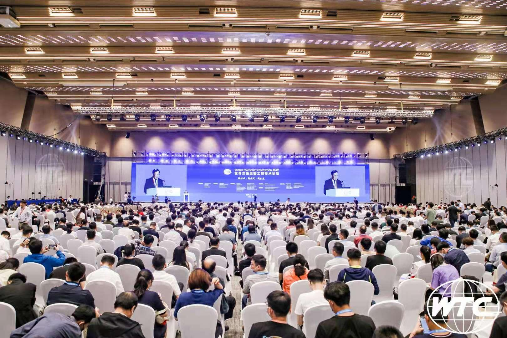
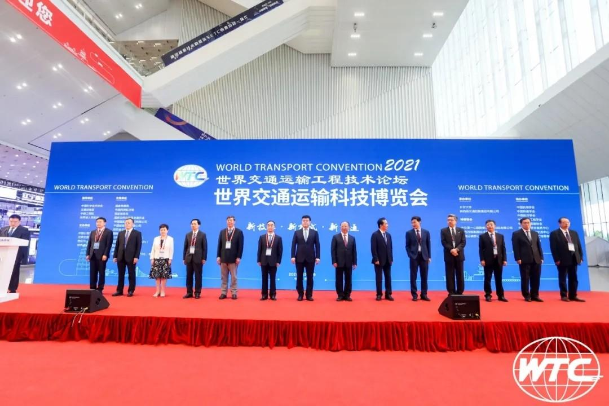

交通改变世界，创新引领未来。2021年6月16日-18日，世界交通运输工程技术论坛(WTC2021)世界交通运输科技博览会(以下简称“博览会”)在陕西省西安市成功举行。中国工程院党组成员、副院长、中国工程院院士何华武，中国科学技术协会党组成员、书记处书记吕昭平，交通运输部总工程师徐亚华，全国人大常委、中国公路学会理事长翁孟勇，陕西省人民政府副省长魏建锋，西安市委副书记、市长李明远等政府机构领导、20余位中外院士及学术界领军人物、国内外知名企业家、国际组织代表等重量级嘉宾，共约6000余人参与了此次盛会。我司总裁、首席专家葛胜锦先生受邀出席本次大会，并携公司相关技术带头人和与会领导、专家及嘉宾代表等进行了现场交流和深度研讨。

本届大会由中国科协、交通运输部、中国工程院、陕西省人民政府指导，中国公路学会、世界交通运输大会执委会、西安市人民政府、陕西省科协主办，以“新技术•新模式•新交通”为主题，会议为期三天，包括开幕式暨主旨报告会、主题论坛、专题论坛、墙报报告、交通科技博览会、科技成果发布、奖赛活动等七大板块，重点围绕强国建设与高质量发展、交通基础设施建管养、智能交通、路衍经济、低碳绿色与可持续发展等热点问题，聚焦当前交通运输相关领域重大前瞻性、关键性技术问题，旨在深化“一带一路”基础设施互联互通，展示交通建设技术创新成果，推进综合立体交通运输体系建设，促进交通运输技术的融合发展。

博览会场馆内，观展人员与参展企业一同探讨5G、北斗精准定位、物联网、大数据、人工智能、云计算、自动驾驶与车路协同，智慧工程，智能管理，智能建造及新型系统、装备等交通运输行业的前沿科技创新成果。为期两天半的博览会将为交通运输行业呈现年度科技盛宴，代表国内最新、最先进的交通运输科技成果在此交流、转化、落地、开花。
我司从创立之初始终致力于交通基建领域的工程信息化建设、工程科技成果研发与应用，致力于“知识供应链的良性循环”和“企业价值链的持续增溢”，希望通过此次盛会与更多行业同仁建立合作伙伴关系，充实企业与行业发展的科技力量，全面服务于交通科技成果工程化事业，有力助推科技变革和交通强国建设。